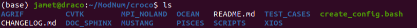
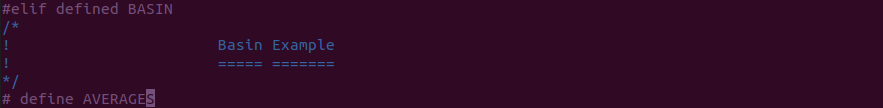
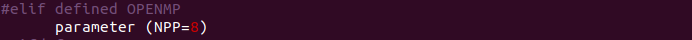

Ctrl+Alt+T)mkdir ~/ModNum/) for the project, then go there (e.g. cd ~/ModNum/)git clone the CROCO code from the official website:
git clone https://gitlab.inria.fr/croco-ocean/croco.gitYou should see the following files (using ls ./croco/), and the source code (i.e. the FORTRAN files *.F) will be in the folder ./croco/OCEAN/

Create a folder where you will run the model
mkdir ./case1
[or mkdir -p ~/ModNum/case1]We need to edit the following files: jobcomp, cppdefs.h, param.h, croco.in so copy them into the folder you just created:
cp ~/ModNum/croco/OCEAN/jobcomp ~/ModNum/case1/
cp ~/ModNum/croco/OCEAN/cppdefs.h ~/ModNum/case1/
cp ~/ModNum/croco/OCEAN/param.h ~/ModNum/case1/
cp ~/ModNum/croco/TEST_CASES/croco.in.Basin ~/ModNum/case1/croco.inThe model needs a fortran compiler and compatible netcdf libraries
module purge
module load intel/12.1 netcdf/c-4.4.1.1-intel12 netcdf/fortran-4.4.4-intel12
module list
With MacOS:
brew install gcc
brew install netcdf
You may need to edit the jobcomp to specify where to find the netcdf libraries (nf-config doesn’t work with homebrew version of netcdf-fortran)
NETCDFLIB="-L/usr/local/lib -lnetcdf -lnetcdff"
NETCDFINC="-I/usr/local/include"
#NETCDFLIB=$(nf-config --flibs)
#NETCDFINC=-I$(nf-config --includedir)Go to your case and edit the jobcomp to specify the location of the source code:
SOURCE1=~/ModNum/croco/OCEAN
Edit the cppdefs.h and choose the predefined test case \(\color{red}{Basin}\):
#define BASIN
...
#undef REGIONALCompile the code:
./jobcomp
./croco croco.in
[or ./croco croco.in &> basin.out &]
[If you run the model in backgrounf mode (i.e. ./croco croco.in &> basin.out &), you can stop it with the unix command kill -9 PID, where PID is the process ID associated with croco, which you can get with the top unix command.]
Look at model variables:
ncdump -h basin_his.nc
Look at the output:
ncview basin_his.nc
See https://croco-ocean.gitlabpages.inria.fr/croco_doc/tutos/tutos.08.run.html
Modify the namelist (croco.in) to:
Note that you also need to modify the cppdefs.h to output averaged files:

To make the model run faster, we can use several processors in parellel with openMP.
cppdefs.h#elif defined BASIN )
and change # undef OPENMP into # define OPENMPparam.h to choose the number of processors (NPP) you want to use

./jobcomp
param.h file). Type in your terminal:
export OMP_NUM_THREADS=8
setenv OMP_NUM_THREADS 8
./croco croco.in
[hint: look for "BASIN" in the files ana_grid.F, analytical.F]